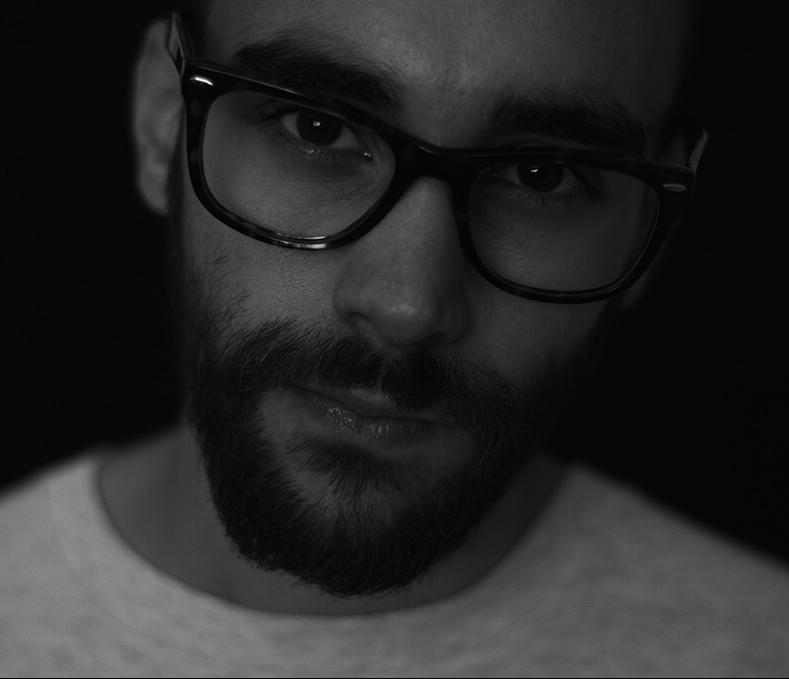

Joven productora independiente conformada por el duo de realizadores de cine, videoclips y publicidad , Fara Judith Sabag y Lacio Splendiani. En 2019 crean productora en el proceso de su primer mediometraje filmado en Uruguay.
Estudiante de Realización audiovisual de la Universidad Nacional de las Artes. Experiencia laboral como freelancer en productora de cine y televisión desde 2014 hasta la actualidad como Asistente de producción, dirección y editor
Estudiante de realización audiovisual de la Universidad Nacional de las Artes. Estudiante de Diseño Gráfico. Actualmente desarrollandose como freelancer en el area de dirección de arte y marketing para empresas